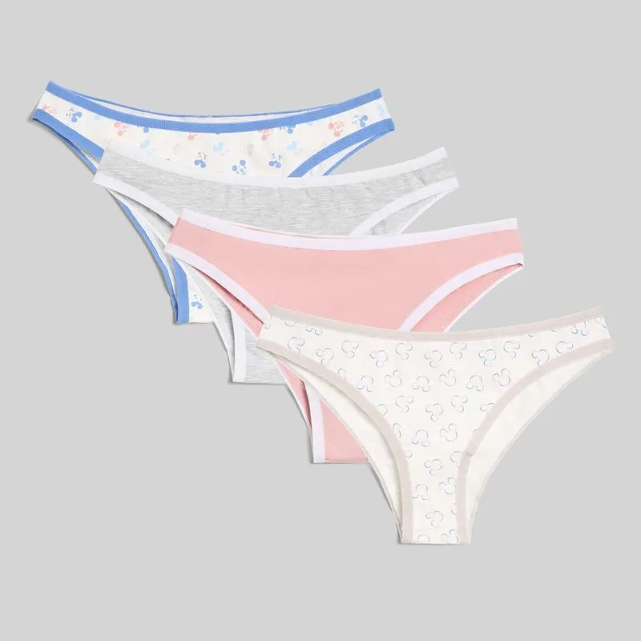
Especialización en Lencería
Perfecciona técnicas avanzadas de confección, acabados y producción para llevar tus prendas a un nivel más competitivo.
Este curso de especialización está dirigido a quienes ya dominan la base y desean dar un salto profesional en confección y acabados.
👉 Ideal para fortalecer tu perfil y trabajar con estándares profesionales de confección.
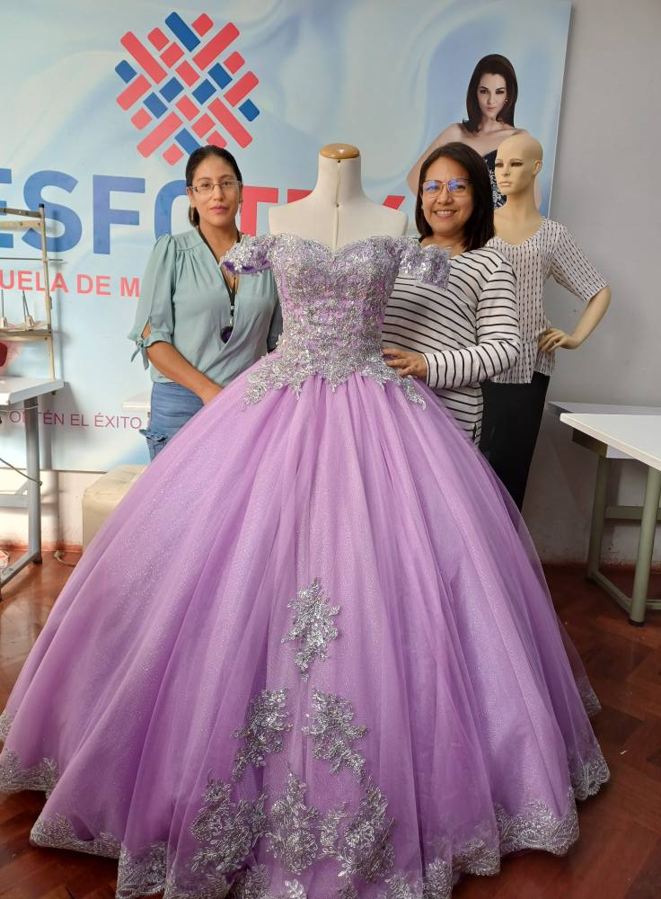
En este curso de especialización aprenderás:
Elige la línea que más se adapta a tu perfil y perfecciona tu técnica con enfoque práctico.

Especialización en Lencería
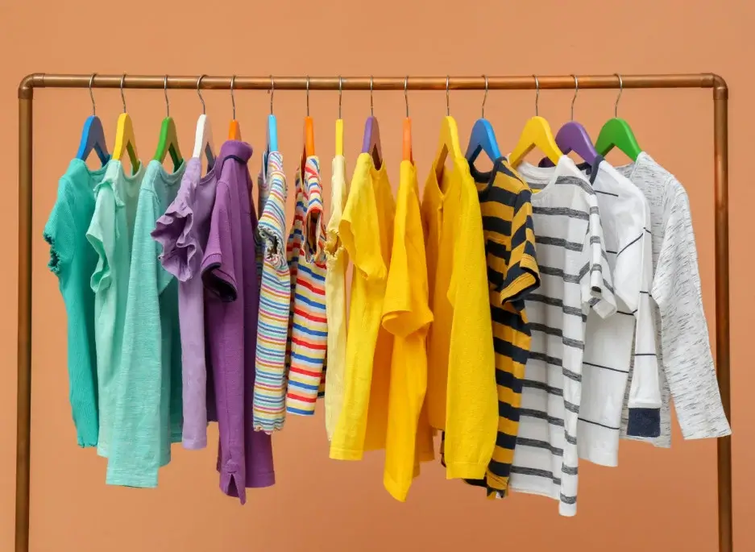
Especialización en Ropa de Niños
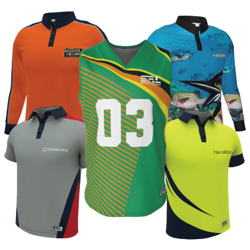
Especialización en Ropa Deportiva
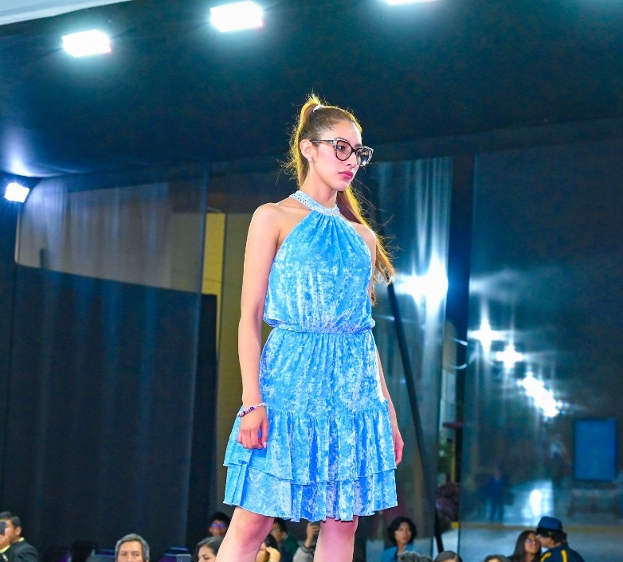
Especialización en Vestidos
Especialización en Uniformes
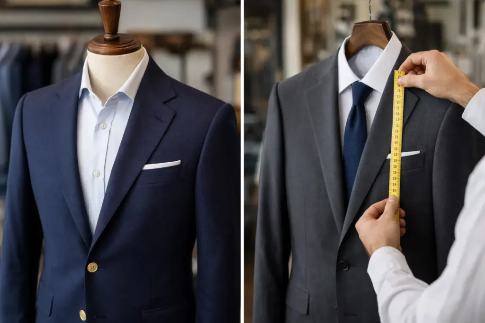
Especialización en Sastre
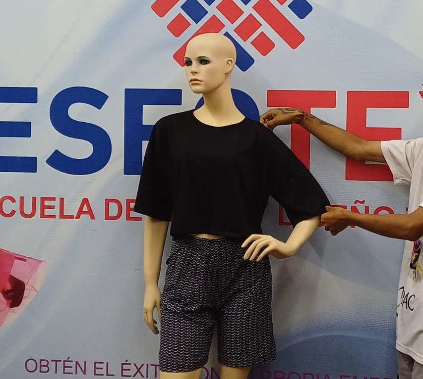
Especialización en Blusas
Especialización en Ropa para Mascotas
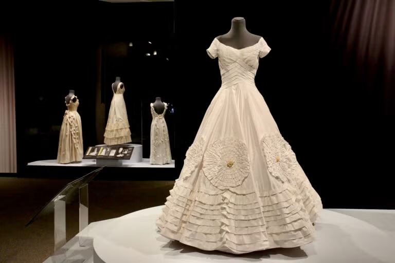
Especialización en Vestidos de Novia
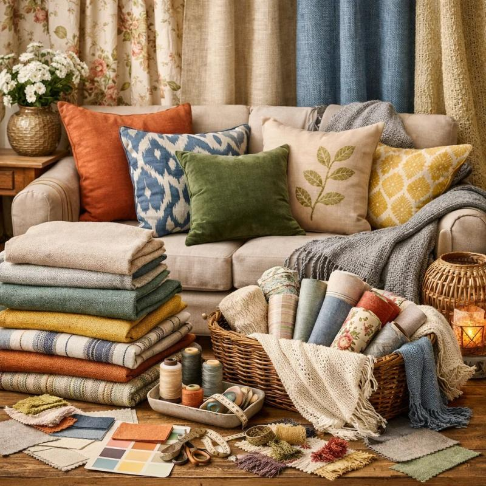
Especialización en Lencería del Hogar
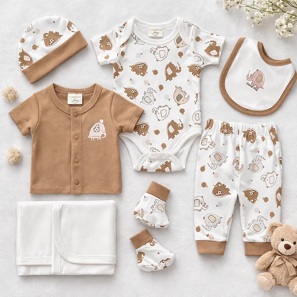
Especialización en Ropa de Bebés
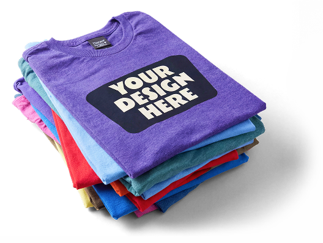
Especialización de Polos
¿A quién está dirigido? A quienes ya tienen base y desean perfeccionar su nivel técnico.
¿Qué ventaja me da especializarme? Mejoras acabados, productividad y valor profesional.
¿Otorgan certificado? Sí, al finalizar se entrega certificación ESFOTEX.